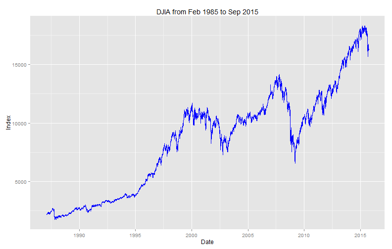

This application investigates the Dow Jones Industrial Average (DJIA) index value from 1985 Feb to 2015 Sep. We try to perform server calculation by predicting the index value for the future using forecasting.
Khoo Hui Tiong
Consultant
This application investigates the Dow Jones Industrial Average (DJIA) index value from 1985 Feb to 2015 Sep. We try to perform server calculation by predicting the index value for the future using forecasting.
The application requires the user to first select the period of trading. This can be done by selecting the dates from "Date Range".
Next the user can select whether to plot a line graph or a bar chart.
There are 4 types of data available (High, Open, Low, Close). These are the different index value at each trading day.
Finally, the user can select the number of days of prediction. The calculation is perform at the server end.

The application uses data from Wall Street Journal.
Shiny App https://jonkhoo.shinyapps.io/devdataprod